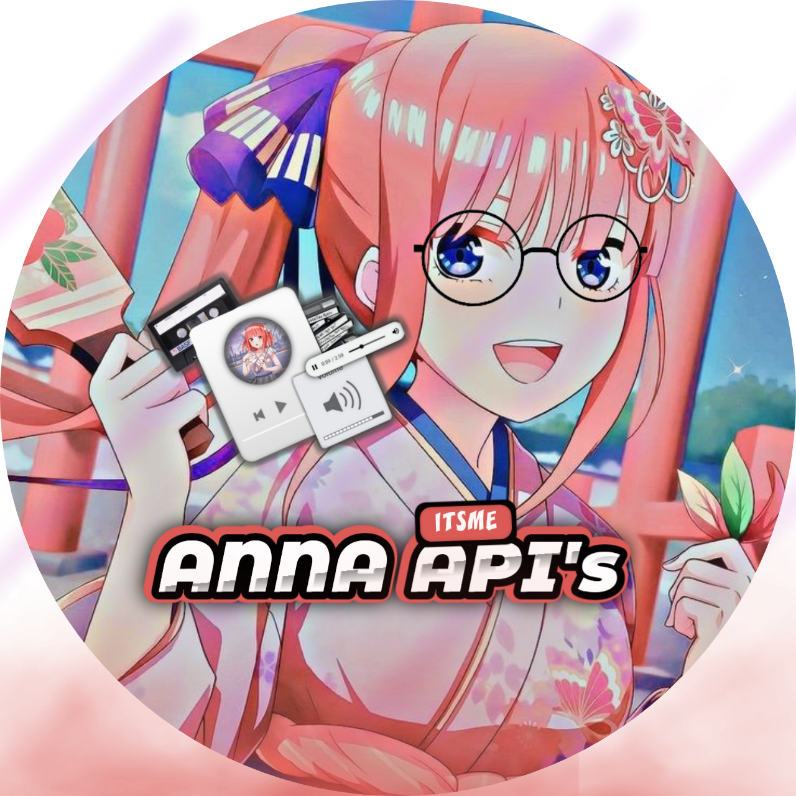

Anna ~ Botz
Hai, perkenalkan saya Anna ~ Botz. Saya adalah Robot WhatsApp MultiFungsi yang dibuat oleh haryadin. Saya di program menggunakan Bahasa Pemrograman JavaScript dan menggunakan runtime NodeJs. Untuk nomer Bot kamu bisa cek pada Icon WhatsApp dibawah.